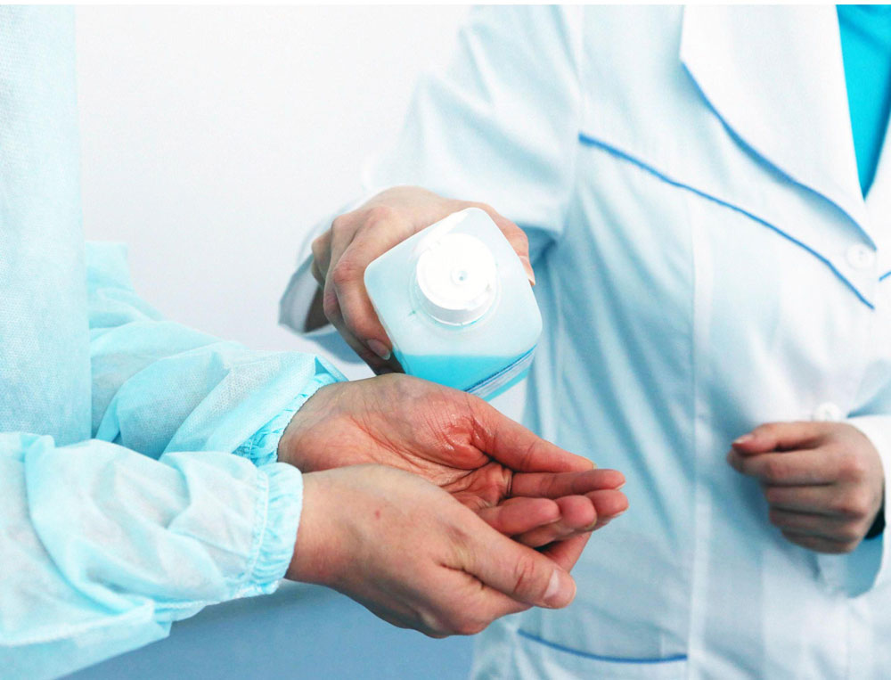

الجودة وسلامة المرضى
يعمل قسم إدارة الجودة عن كثب مع موظفي المؤسسة من أجل التطوير المستمر لمستوى جودة الرعاية المقدمة مع الاحتفاظ ببيئة عمل خالية من المخاطر بما يضمن الامتثال لمعايير الاعتماد
يحدد قسم إدارة الجودة أولويات التطوير المتاحة للمرضى من خلال مراجعة بيانات الأداء وتنفيذ مشاريع تطوير الجودة المناسبة لضمان خدمات عالية الجودة
بلوغ المستوى الفعال للجودة وسلامة المرضى
ضمان السلامة والكفاءة العالية والرعاية عالية المستوى للمرضى، والتي تعتبر جزءاً لا يتجزأ من الممارسة اليومية لجميع الموظفين.
إن هدفنا هو نشر الوعي على نطاق المؤسسة وترسيخ هذه المفاهيم، ما أدى إلى ضرورة إنشاء قسم إدارة الجودة. ونحن نعمل بشكل متعاون مع مقدمي الرعاية الصحية لتحقيق هذه الأهداف وتحسين تجربة مرضانا وعائلاتهم أثناء تلقيهم الخدمات في المستشفى
تجربة المريض
تحسين تجربة المريض من خلال قسم تجربة المريض الذي يعني بمجموعة تعاملات المريض مع نظام الرعاية الصحية بالمستشفى بما في ذلك خدمة الرعاية المقدمة من مقدمي الرعاية الصحية والممرضين وموظفي المستشفى تشمل تجربة المريض جوانب عديدة من تقديم الرعاية الصحية للمرضى باعتبارها مكوناً جوهرياً في تقييم مستوى جودة الرعاية الصحية، مثل الحصول على مواعيد في أوقات مناسبة وتحسين رحلة المريض بأقسام المستشفى وسهولة الاطلاع على المعلومات وسبل التواصل الجيدة مع مقدمي الرعاية الصحية
وبالنظر إلى مختلف جوانب تجربة المريض، يمكننا تقييم إلى أي مدى يتلقى المرضي الرعاية الصحية التي تراعي وتستجيب لما يفضله كل مريض واحتياجاته وكذلك التأكيد على حقوقه ووجباته والتي تتوافق مع قيمه. كما يقوم قسم تجربة مريض بدراسة مدى رضا المرضى من خلال الاستبيانات الدورية ووضع مؤشرات لها والتحليل الموضوعي للاستبيانات لإيجاد طرق التحسين المناسبة وتحسين رضا المرضى
مكافحة العدوى

مهام القسم :
تكمن المهمة الأساسية لإدارة قسم مكافحة العدوى في دعم النظام الصحي لرعاية المرضى والحد من انتشار الأمراض المعدية للوقاية منها ونشر الوعي الصحي، وتعزيز سلامة المرضى عن طريق الحد من المخاطر الصحية.